专题03 数轴相关动点压轴题01（4种类型32道）

考点01 数轴动点定值问题
考点02 数轴动点最值问题
考点03 数轴动点存在性问题
考点04 折线数轴动点问题

考点01 数轴动点定值问题
1．已知：在一条东西向的双轨铁路上迎面驶来一快一慢两列火车，快车长
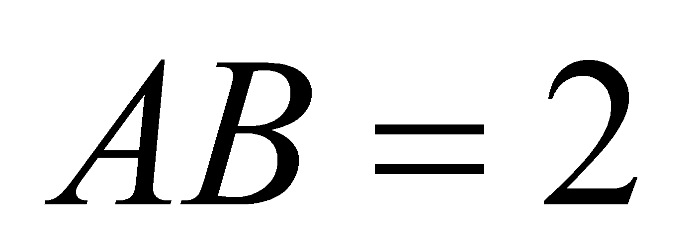
(单位长度)，慢车长 (单位长度，设正在行驶途中的某一时刻，如图，以两车之间的某点0为原点，取向右方向为正方向画数轴，此时快车头A在数轴上表示的数是a，慢车头C在数轴上表示的数是c.若快车
(单位长度，设正在行驶途中的某一时刻，如图，以两车之间的某点0为原点，取向右方向为正方向画数轴，此时快车头A在数轴上表示的数是a，慢车头C在数轴上表示的数是c.若快车 以6个单位长度/秒的速度向右匀速继续行驶，同时慢车
以6个单位长度/秒的速度向右匀速继续行驶，同时慢车 以2个单位长度/秒的速度向左匀速继续行驶，且a、c分别是多项式
以2个单位长度/秒的速度向左匀速继续行驶，且a、c分别是多项式 的二次项系数和常数项.
的二次项系数和常数项.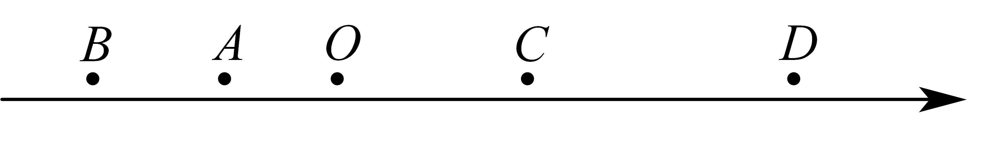
(1)求此时刻快车头A与慢车头C之间相距多少单位长度?
(2)从此时刻开始算起，问再行驶多少秒钟两列火车的车头 相距8个单位长度?
相距8个单位长度?
(3)此时在快车上有一位爱动脑筋的乘客——明德少年P，他发现行驶中有一段时间t秒钟，他的位置P到两列火车头的距离和加上到两列火车尾 的距离和是一个不变的值(即为定值).你认为明德少年P发现的这一结论是否正确?若正确，求出这个时间及定值；若不正确，请说明理由.
的距离和是一个不变的值(即为定值).你认为明德少年P发现的这一结论是否正确?若正确，求出这个时间及定值；若不正确，请说明理由.
【答案】(1)24个单位长度
(2)在行驶2秒或4秒两列火车行驶到车头相距8个单位
(3)正确，这个时间为0.5秒，定值为6个单位长度
【分析】（1）根据题意，得到 的值，再利用数轴上两点之间的距离公式，即可解答；
的值，再利用数轴上两点之间的距离公式，即可解答；
（2）分类讨论，即相遇之前，相距8个单位；相遇之后，相距8个单位，分情况讨论即可解答；
（3）根据， 在之间时，
在之间时， 是一个定值，求出这个定值和此时的时间即可。
是一个定值，求出这个定值和此时的时间即可。
【详解】（1）解：由题可知：
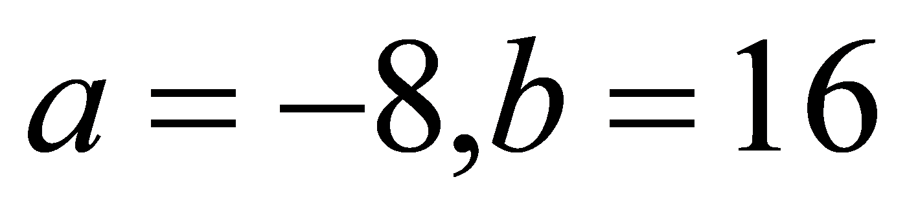
所以此刻快车头 与慢车头
与慢车头 之间的相距
之间的相距
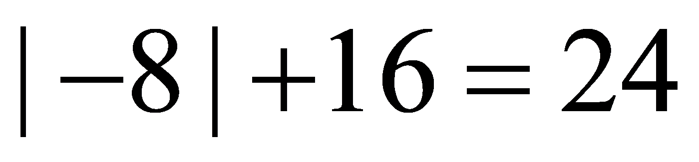
（单位长度）答：快车头与慢车头之间的相距个单位长度
（2）解：本题有两种可能，
第一种，相遇之前，相距8个单位
则列出算式：
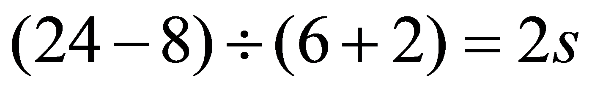
第二种，相遇之后，相距8个单位
则列出算式：
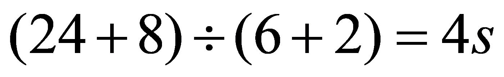
答：在行驶2秒或4秒两列火车行驶到车头相距8个单位
（3）解：正确，理由如下：
因为人坐在快车上，所以，
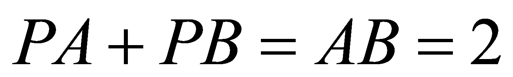
单位长度当在之间时，
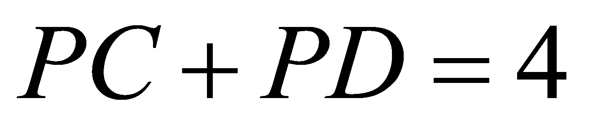
（单位长度），此时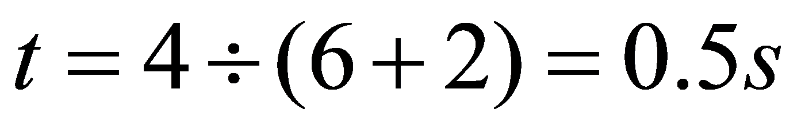
此时，
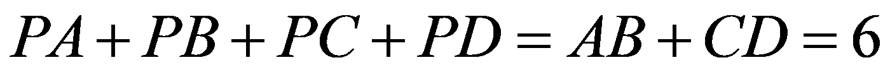
单位长度答：正确，这个时间为0.5秒，定值为6个单位长度
【点睛】本题考查了两点之间的距离，数轴，绝对值，知道数轴上任意两点的距离等于右边的数减去左边的数的差，熟练掌握行程问题的等量关系：时间 路程
路程 速度，根据数形结合的思想解决问题。
速度，根据数形结合的思想解决问题。
2．如图，已知线段
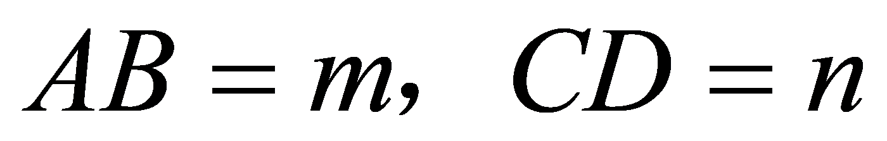
，线段在直线上运动（A在B左侧，C在D左侧），若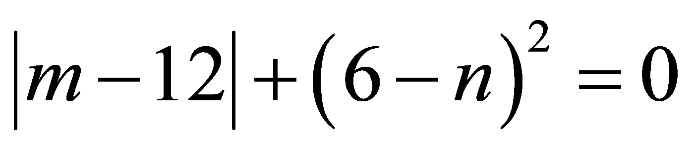

(1)求线段 的长．
的长．
(2)若点M，N分别为线段 的中点，且
的中点，且 ，求线段
，求线段 的长；
的长；
(3)当运动到某一时刻时，点D与点B重合，点P是线段延长线上任意一点，则
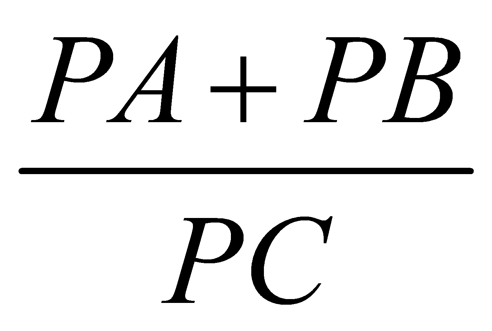
是一个定值，请加以说明．【答案】(1)
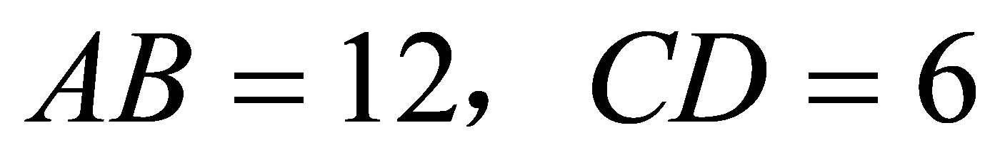
(2)
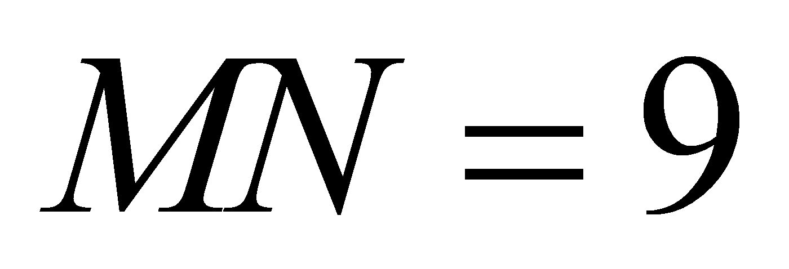
(3)见解析．
【分析】（1）根据非负数的性质求出m、n的值即可得到答案；
（2）分点C在点B左侧和右侧两种情况讨论求解即可；
（3）先根据线段和差关系证明 ，再由
，再由
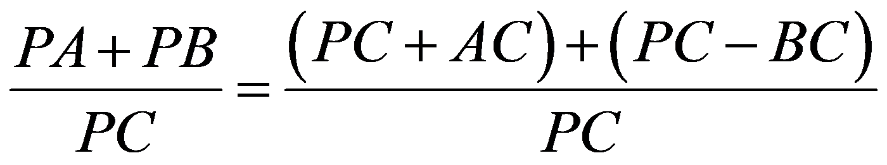
即可得到答案．【详解】（1）解：∵，
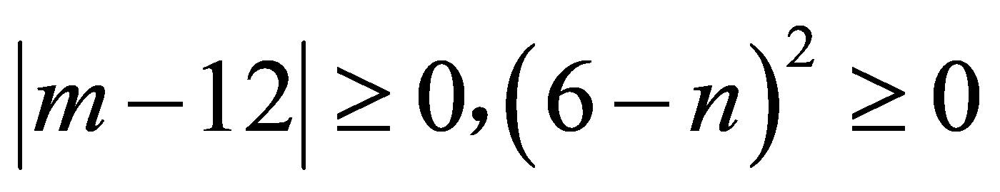
，∴
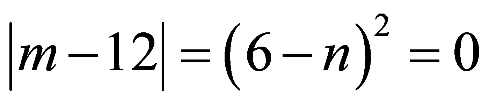
，∴
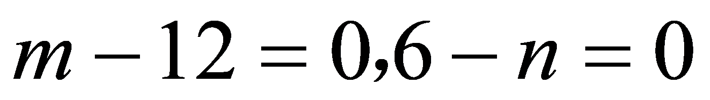
，∴
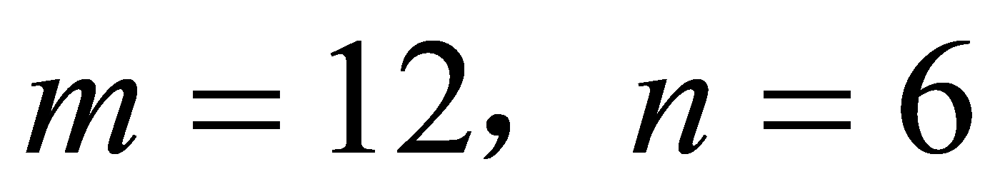
，∴
（2）解：分两种情况讨论：
①当点C在点B右侧时，如图所示：
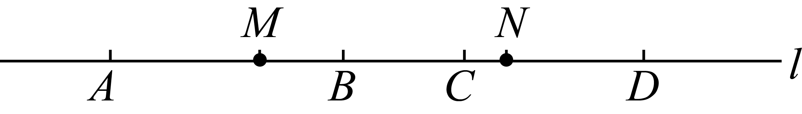
∵点M，N分别为线段的中点，
∴
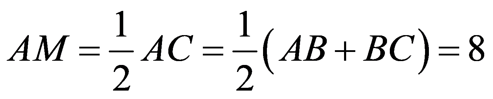
，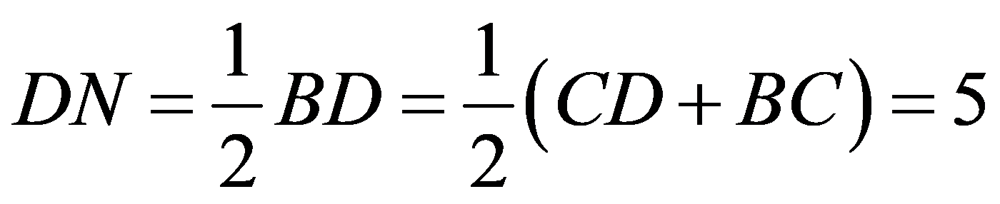
．∴
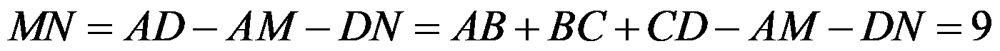
；②当点C在点B左侧时，如图所示：
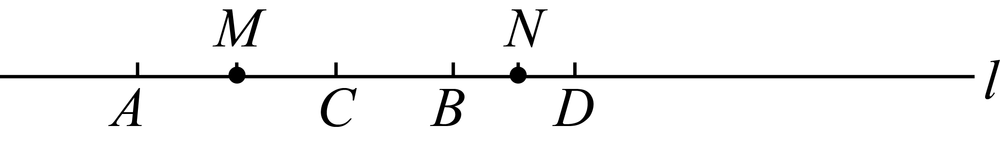
∵点M，N分别为线段的中点，
∴
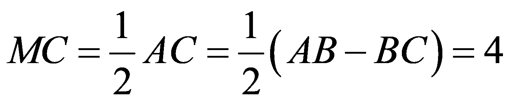
，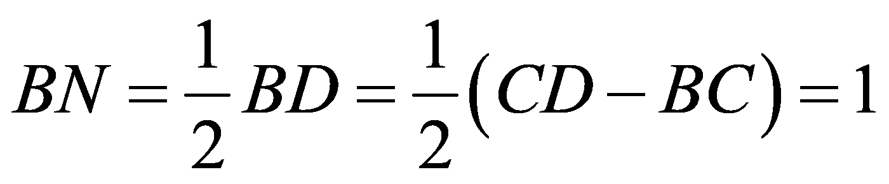
，∴
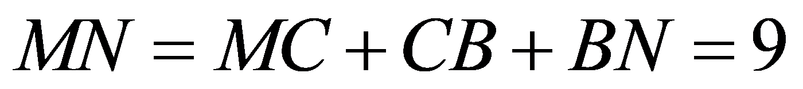
；综上所述，；
（3）解：定值为2，说明如下：
点D与点B重合，点P是线段延长线上任意一点，如图所示：
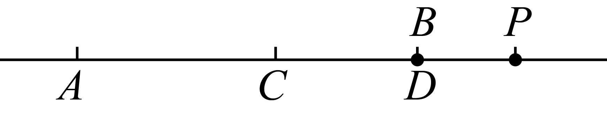
∴
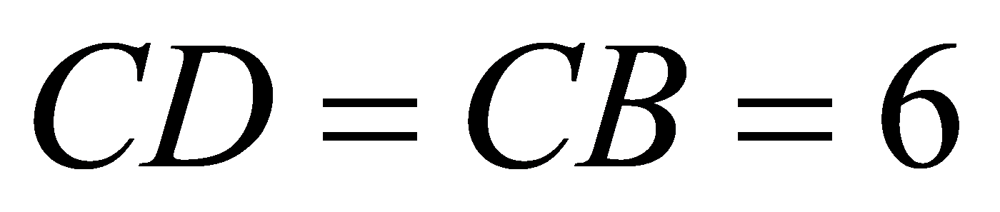
，∵
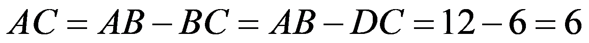
，∴，
∴
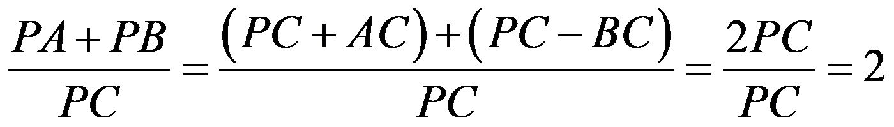
．【点睛】本题主要考查了非负数的性质，线段的和差关系，利用分类讨论的思想求解是解题的关键，．
3．如图，数轴上点、 分别对应数
分别对应数 、
、 ，其中
，其中 ，
， ．
．

(1)当 ，
，
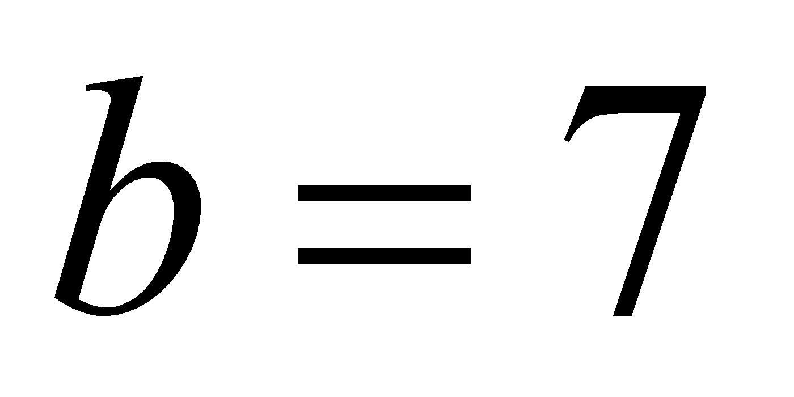
时，线段的中点对应的数是_________．(2)若该数轴上另有一点 对应着数
对应着数 ．
．
①当 ，
，
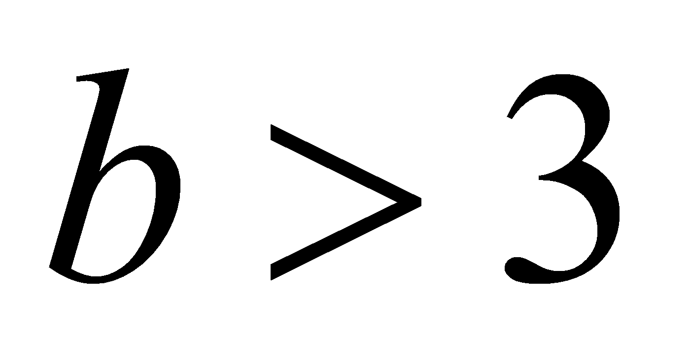
，且 时，求代数式
时，求代数式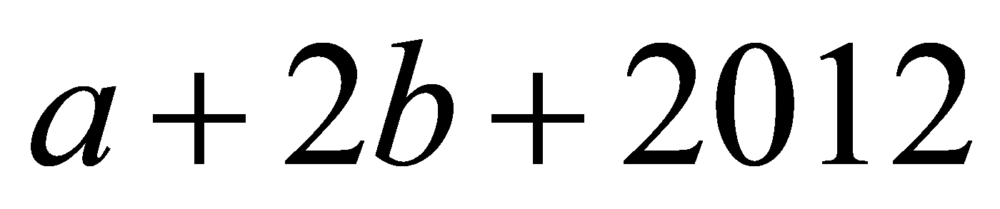
的值；②．且
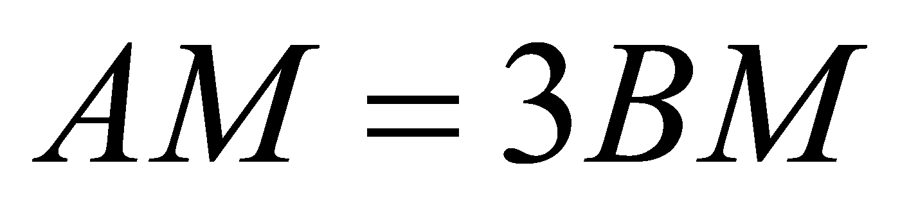
时，小明通过演算发现代数式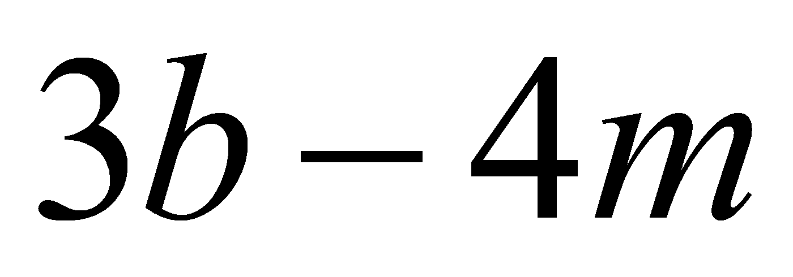
是一个定值，老师点评：小明同学的演算发现还不完整！请你通过演算解释为什么“小明的演算发现”是不完整的？【答案】(1)2
(2)①2021；②见解析
【分析】（1）根据数轴上两点之间中点的表示方法，直接列式计算即可；
（2）①用含a、b的代数式表示AM、BM，根据AM＝2BM列式求出a＋2b＝9即可解决问题；
②分两种情况进行解答，一种是m＜b时，另一种是m＞b时，分别根据AM＝3BM列式整理，即可得出答案．
【详解】（1）解：线段的中点对应的数是：
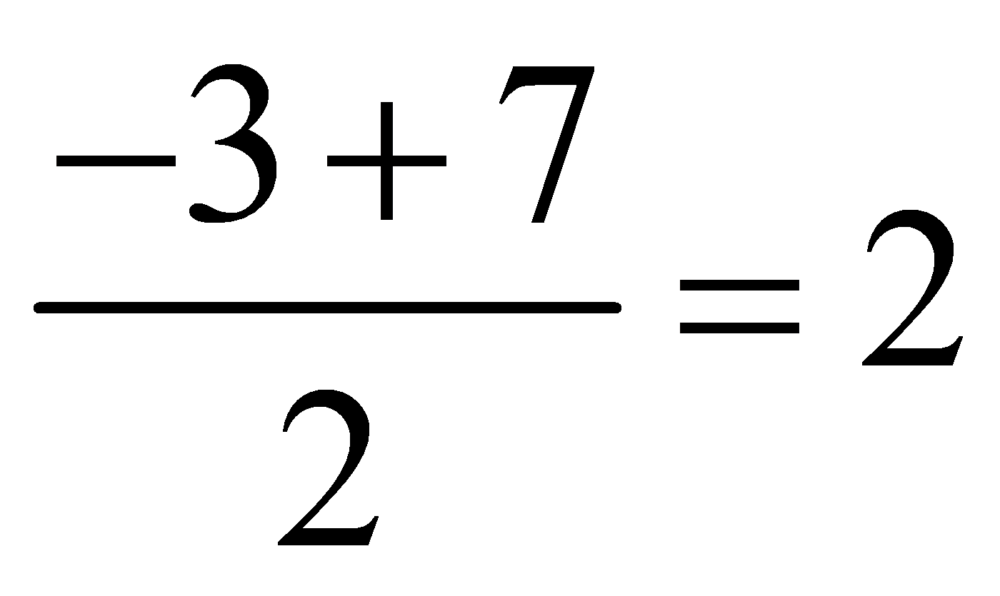
，故答案为：2；
（2）①由m＝3，b＞3，且AM＝2BM，
可得3−a＝2（b−3），
整理得：a＋2b＝9，
所以，a＋2b＋2012＝9＋2012＝2021；
②当a＝−3，且AM＝3BM时，需要分两种情形：
Ⅰ：当m＜b时，则m−（−3）＝3（b−m），
整理得：3b−4m＝3；
Ⅱ：当m＞b时，则m−（−3）＝3（m−b），
整理得：2m−3b＝3；
综上，小明的演算发现并不完整．
【点睛】本题考查用数轴上的点表示数，根据数轴上的点表示的数，求两点间的距离和中点所表示的数等，当不知道点所在位置的时候，要注意分情况讨论，避免漏解．
4．如图，已知线段
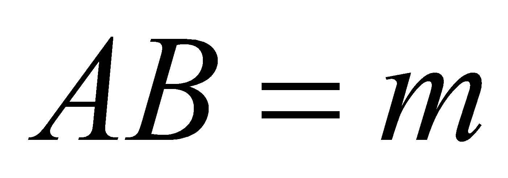
， ，线段在直线上运动（点在点的左侧，点在点
，线段在直线上运动（点在点的左侧，点在点 的左侧），若
的左侧），若 ．
．（1）求线段，的长；
（2）若点， 分别为线段，
分别为线段， 的中点，，求线段的长；
的中点，，求线段的长；
（3）当运动到某一时刻时，点与点重合，点是线段的延长线上任意一点，下列两个结论：①
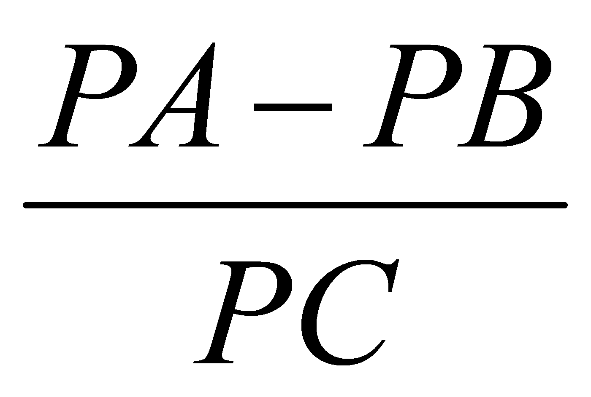
是定值，②是定值，请选择你认为正确的一个并加以说明．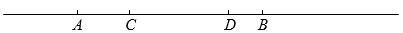
【答案】（1） ，
，
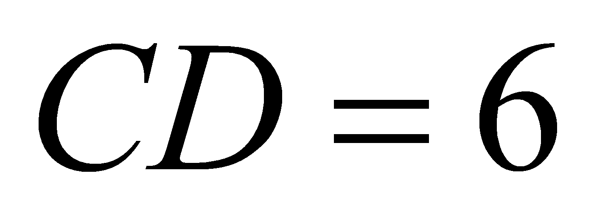
；（2）9；（3）②正确，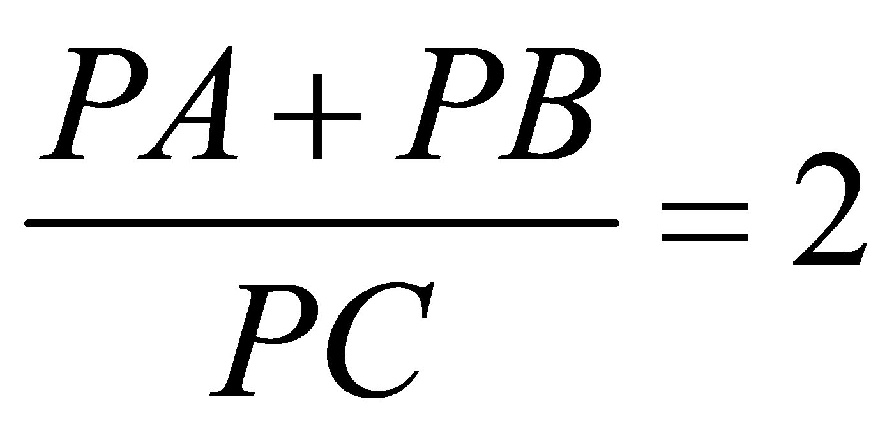
，见解析【分析】（1）利用两个非负数和为0，可得每个非负数为0，可求 ，
， 即可；
即可；
（2）分类考虑当点在点的右侧和点在点的左侧时，利用中点可求AM，DN，利用线段和差求AD，可求MN=AD-AM-DN即可；
（3）利用PA=PC+AC，PB=PC-BC，求出PA+PB=2PC即可．
【详解】解：（1）由，
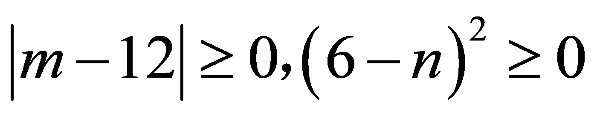
，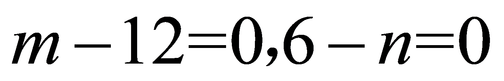
，得，，
所以，；
（2）当点在点的右侧时，如图，
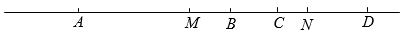
因为点，分别为线段，的中点，，
所以
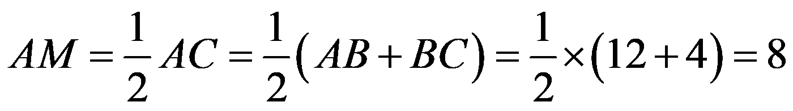
，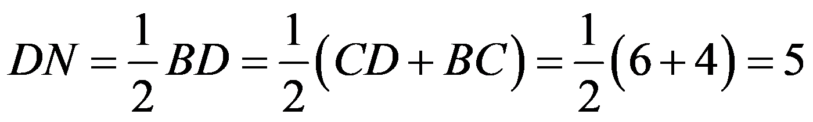
，又因为，
所以
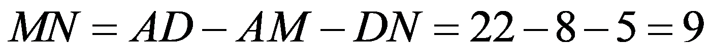
，当点在点的左侧时，如图，
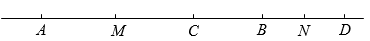
因为点，分别为线段，的中点，
所以，，
所以
所以．
综上，线段的长为9；
（3）②正确，且．理由如下：
因为点与点重合，所以，
所以，所以，
所以．
【点睛】本题考查非负数的性质，线段中点，线段和差，线段的比问题，掌握非负数的性质，线段中点，线段和差，线段的比，关键是利用线段和差PA=PC+AC，PB=PC-BC，求出PA+PB=2PC．
5．如图，在数轴上点表示数，点示数，点表示数 ，的相反数是
，的相反数是 ，且、满足
，且、满足 ．
．
(1) ________；
________； ________；
________； ________；
________；
(2)若将数轴折叠，使得点与点重合，则点与数________表示的点重合；若数轴上有一点为线段的三等分点（点在线段内），则点表示的数是________；
(3)点、、开始在数轴上运动，若点以每秒 个单位长度的速度向左运动，同时，点和点分别以每秒
个单位长度的速度向左运动，同时，点和点分别以每秒 个单位长度和
个单位长度和 个单位长度的速度向右运动，假设
个单位长度的速度向右运动，假设 秒钟过后，若点与点之间的距离表示为，点与点之间的距离表示为
秒钟过后，若点与点之间的距离表示为，点与点之间的距离表示为 ，是否存在常数
，是否存在常数 ，使
，使 为定值，若存在，求的值；若不存在，请说明理由．
为定值，若存在，求的值；若不存在，请说明理由．
【答案】(1) ，，
，，
(2) ，
， 或
或
(3)存在，
【分析】本题考查了绝对值和平方的非负性，数轴动点问题．
（1）根据绝对值和平方的非负性，相反数，即可求出a，b，c的值；
（2）先求出折点为，即可求出与点A重合的数，由三等分点的定义得出或，即可求出点D表示的数；
（3）根据题意得出点表示的数为 ，点表示的数为
，点表示的数为 ，点表示的数为
，点表示的数为 ，即可得出
，即可得出 ，，进而得出，即可解答．
，，进而得出，即可解答．
【详解】（1）解：
 ，
， ，
， ，
，

 ，
， ，
，
的相反数为，
 ，
，
故答案为：，，；
（2）解：与重合，即，重合，
折点为 ，
，
与点重合的点是 ，
，
由三等分点得或 ，
，
∴表示的数为 或
或 ．
．
故答案为：；或；
（3）解：存在，
∵点表示的数是，向左的速度为每秒个单位长度，点表示的数是，向右的速度为每秒个单位长度，点表示的数是，向右的速度为每秒个单位长度，设运动时间为秒，
点表示的数为，点表示的数为，点表示的数为，
 ，，
，，

为定值，
的值与无关，
，
∴．
6．我们规定：对于数轴上不同的三个点M，N，P，当点M在点N右侧时，若点P到点M的距离恰好为点P到点N的距离的n倍，且n为正整数，（即 ），则称点P是“
），则称点P是“ 关联点”
关联点”
如图，已知在数轴上，原点为O，点A，点B表示的数分别为4，．
(1)原点O （填“是”或“不是”）“ 关联点”；
关联点”；
(2)若点C是“ 整2关联点”，则点C所表示的数 ；
整2关联点”，则点C所表示的数 ；
(3)若点A沿数轴向右运动，每秒运动1个单位长度，同时点B沿数轴向左运动，每秒运动2个单位长度，则运动时间为 秒时，原点O恰好是“关联点”，此时n的值为 ．
(4)点Q在A，B之间运动，且不与A，B两点重合，作“ 关联点”，记为
关联点”，记为 ，作“
，作“ 关联点”，记为
关联点”，记为 ，且满足，分别在线段
，且满足，分别在线段 和
和 上．当点Q运动时，若存在整数m，n，使得式子
上．当点Q运动时，若存在整数m，n，使得式子 为定值，求出m，n满足的数量关系．
为定值，求出m，n满足的数量关系．
【答案】(1)是
(2)0或
(3)2；1
(4)
【分析】本题是数轴上新定义应用题，主要运用“数轴上表示数、的两点之间的距离为 ”来解题．
”来解题．
（1）根据已知条件及新定义即可判定；
（2）根据已知条件及新定义得出等式，再分类讨论点的位置，得出满足条件的值；
（3）设运动秒，根据数轴是两点距离的计算方法用含的代数式表示 、
、 ，再根据新定义得出关于等量关系，由“
，再根据新定义得出关于等量关系，由“ 是正整数”求出、即可；
是正整数”求出、即可；
（4）设点 表示的数为，根据新定义、已知条件，得出用、、表示的代数式，再由“点运动时，式子为定值”知：关于的代数式中的系数为0，从而得出整数、满足的数量关系．
表示的数为，根据新定义、已知条件，得出用、、表示的代数式，再由“点运动时，式子为定值”知：关于的代数式中的系数为0，从而得出整数、满足的数量关系．
【详解】（1）解：点A，点B表示的数分别为4，，
， ，
，
，
原点 是“，
是“， 2关联点”，
2关联点”，
故答案为：是；
（2）点A，点B表示的数分别为4，，
，
若点是“，整2关联点”，则 ，
，
当点在线段上时，，
此时，点所表示的数为 ；
；
当点在线段的延长线上时，，
此时，点所表示的数为，
综上所述，点所表示的数0或，
故答案为：0或；
（3）若点A沿数轴向右运动，每秒运动1个单位长度，同时点B沿数轴向左运动，每秒运动2个单位长度，设运动秒，
则，，
原点O恰好是“[A，B]n关联点”，
 是正整数），即有，
是正整数），即有，
 ，
，
 是正整数，
是正整数，
而，为3的约数，
 ，即
，即 ，
，
即运动时间为2秒时，原点恰好是“，整关联点”，此时的值为1，
故答案为：2；1；
（4）点在、之间运动，且不与、两点重合，作“，整2关联点”，记为，作“ ，整3关联点”，记为，且满足、分别在线段和上，
，整3关联点”，记为，且满足、分别在线段和上，
设点表示的数为，则
 ，，
，，
 ，，
，，
， ，
，
 ，
，
当点运动时，若存在整数、，使得式子 为定值，则
为定值，则 ，
，
 ．
．
即整数、满足的数量关系是．
7．若点 在数轴上对应的数分别为
在数轴上对应的数分别为 ，其中是最小的正整数，
，其中是最小的正整数， 满足
满足 ，请回答问题：
，请回答问题：
(1)请直接写出的值；
(2)在数轴上是否存在点，使得 ？若存在，求出点对应的数；若不存在，请说明理由；
？若存在，求出点对应的数；若不存在，请说明理由；
(3)若点同时开始在数轴上分别以每秒1个单位长度，每秒3个单位长度，每秒4个单位长度沿着数轴负方向运动．经过秒后，是否存在常数，使得 为定值？若存在，请求出的值以及这个定值；若不存在，请说明理由．
为定值？若存在，请求出的值以及这个定值；若不存在，请说明理由．
【答案】(1)， ，；
，；
(2) 或
或 ；
；
(3)存在；当 时，为定值；当
时，为定值；当 时，为定值．
时，为定值．
【分析】（1）由绝对值和偶次方的非负性可求出的值；
（2）设点表示的数为 ，分在之间、在点左边、在之间、在点右边四种情况考虑，由利用两点间的距离公式，即可得出关于x的一元一次方程，解之即可得出结论；
，分在之间、在点左边、在之间、在点右边四种情况考虑，由利用两点间的距离公式，即可得出关于x的一元一次方程，解之即可得出结论；
（3）表示出点表示的数为 ，点表示的数为，点表示的数为
，点表示的数为，点表示的数为 ，分①当，即
，分①当，即 时，②当时，进行讨论，分别表示出，再根据是定值，确定出的值即可．
时，②当时，进行讨论，分别表示出，再根据是定值，确定出的值即可．
【详解】（1）解：，
 ，
， ，
，
 ，,
，,
是最小的正整数,
．
（2）解：设点表示的数为，
 ，
，
①在之间，
，
，
；
②在左边，
 ，
，
，
；
③在之间，
，
，
（舍去）；
④在的右边，
 ，
，
，
（舍去）；
综上所述， 或
或
点对应的数为：或；
（3）解：存在，
运动时间为 ，
，
由题意，点表示的数为，点表示的数为，点表示的数为，
①当，即时，
 ，
，
 ，
，
 ，
，
 为定值，
为定值，
，
 ，
，
 ；
；
②当时，
 ，
，
，
，
为定值，
 ，
，
 ，
，
 ；
；
综上所述，存在常数，使得为定值；当时，为定值；当时，为定值．
【点睛】本题考查了绝对值与偶次方的非负性，数轴上两点间的距离的表示，熟练掌握两点间的距离的表示方法是解答本题的关键．注意分类讨论思想的运用．
8．已知：在一条东西向的双轨铁路上迎面驶来一快一慢两列火车，快车长 （单位长度），慢车长（单位长度），设正在行驶途中的某一时刻，如图，以两车之间的某点为原点，取向右方向为正方向画数轴，此时快车头在数轴上表示的数是，慢车头在数轴上表示的数是．若快车以6个单位长度/秒的速度向右匀速行驶，同时慢车以2个单位长度/秒的速度向左匀速行驶，
（单位长度），慢车长（单位长度），设正在行驶途中的某一时刻，如图，以两车之间的某点为原点，取向右方向为正方向画数轴，此时快车头在数轴上表示的数是，慢车头在数轴上表示的数是．若快车以6个单位长度/秒的速度向右匀速行驶，同时慢车以2个单位长度/秒的速度向左匀速行驶， ．
．

(1) ， ．
(2)从此时刻开始算起，问再行驶多少秒钟两列火车行驶到车头 相距8个单位长度？
相距8个单位长度？
(3)此时在快车上有一位爱动脑筋的七年级学生乘客，他发现行驶中有一段时间秒钟，他的位置到两列火车头 的距离和加上到两列火车尾
的距离和加上到两列火车尾 的距离和是一个不变的值（即为定值）．你认为学生发现的这一结论是否正确？若正确，求出这个时间定值；若不正确，请说明理由．
的距离和是一个不变的值（即为定值）．你认为学生发现的这一结论是否正确？若正确，求出这个时间定值；若不正确，请说明理由．
【答案】(1)，
(2)再行驶2秒或4秒两列火车行驶到车头相距8个单位长度
(3)正确，这个时间是0.625秒，定值是8单位长度
【分析】（1）根据非负数的性质求出，即可得到答案；
（2）根据时间路程和速度和，列式计算即可求解；
（3）由于，只需要是定值，从快车上乘客与慢车相遇到完全离开之间都满足是定值，依此分析即可求解．
【详解】（1）解：，
，
解得：，，
故答案为： ，16；
，16；
（2）解：此时刻快车头与慢车头之间相距（单位长度）；
（秒）或（秒），
答：再行驶2秒或4秒两列火车行驶到车头相距8个单位长度；
（3）解：正确，
，
当在之间时，是定值5，
（秒），
此时（单位长度），
故这个时间是0.625秒，定值是8单位长度．
【点睛】本题考查了两点的距离、数轴、绝对值和偶次方的非负性，知道数轴上任意两点的距离等于右边的数减去左边的数的差，熟练掌握行程问题的等量关系：时间路程速度，根据数形结合的思想理解和解决问题．
考点02 数轴动点最值问题
9．如图，有理数，分别对应数轴上的点，，且，满足 ．
．

(1)直接写出，的值：______；______；
(2)若动点，分别从，同时出发，以每秒4个单位长度的速度沿数轴向右运动，以每秒2个单位的长度的速度沿数轴向右运动，当，相遇时停止运动，当为何值时，；
(3)我们规定，若在线段上存在满足，则我们称点是线段的一个分点．点从线段上的2分点出发，以每秒1个单位长度在数轴上按以下规律往返运动：第一回合，从点到点，再从点到点回到点；第二回合，从点到的中点，再从点到 的中点回到点；第三回合，从点到的中点，再从点到的中点回到点
的中点回到点；第三回合，从点到的中点，再从点到的中点回到点 ，如此循环下去，若第秒时满足，求的最大值．
，如此循环下去，若第秒时满足，求的最大值．
【答案】(1)；
(2)当或时，
(3)的最大值为秒
【分析】（1）根据平方的非负性，和绝对值的非负性，得到 ，，即可求解，
，，即可求解，
（2）用含的代数式表示出 ，
， ，代入，分，两种情况，即可求解，
，代入，分，两种情况，即可求解，
（3）先求出点对应的有理数，化简，求出等式成立时，对应的点的位置，找到点的运动规律，求出点最后一次经过该位置的时间，即可求解，
本题考查了数轴上的动点，解题的关键是：通过讨论化简等量关系式求解，找到运动规律．
【详解】（1）解：∵，
∴，，解得： ，
， ，
，
故答案为：；，
（2）解：设有理数，分别对应数轴上的点，，
则：，，
∴，，
∵两球相遇时停止运动，
∴，解得：，
∴ ，
，
当时，由，可得：，解得：，
当时，由，可得：，解得：，
故答案为：当或时，，
（3）解：∵点是线段上的2分点，
∴，
∵，
∴点对应的有理数 ，
，
∵，即：，
∵点一直在的左侧，
，，
∴，即：，
当 时，，解得：，
时，，解得：，
当时，，解得：，
根据题意得：
、、、 、…所对应的数为：、
、…所对应的数为：、 、
、 、
、 …，
…，
、、、、…所对应的数为：、、 、
、 、…，
、…，
第三回合，点从回到点的过程中，最后一次经过点，
第一回合用时：（秒），
第二回合用时：（秒），
第三回合，点从点到用时：（秒），
点从点到用时：（秒），
点从点到点用时：（秒），
故总用时（秒），
故答案为：的最大值为秒．
10．已知数轴上有A，B两个点，分别表示有理数，4．

(1)数轴上点A到点B的距离为______；数轴上到点A，B的距离相等的点的位置表示的有理数为______；
(2)若有动点P从点A出发，以每秒1个单位的速度向右移动，设移动时间为秒．用含的式子分别表示P点到点A和点B的距离．
(3)若，则x的取值范围是______；
(4)若x表示一个有理数，求式子 最大值．
最大值．
【答案】(1) ，
，
(2)，当时，，当 时，
时，
(3)
(4)
【分析】本题考查了数轴上两点之间的距离，利用数轴上的点表示有理数，绝对值的几何意义，熟练掌握以上知识点并灵活运用是解此题的关键．
（1）利用数轴上两点间的距离公式计算即可得出数轴上点A到点B的距离，再利用数轴上两点的中点的求法计算得出数轴上到点A，B的距离相等的点的位置表示的有理数；
（2）由题意可得，秒时，点表示的数为，再由数轴上两点间的距离公式计算即可得解；
（3）根据 表示数轴上与
表示数轴上与 两点之间的距离，表示数轴上与
两点之间的距离，表示数轴上与 之间的距离，并结合题意即可得解；
之间的距离，并结合题意即可得解；
（4）根据几何意义分析可得，当时，有最小值为，由此计算即可得解．
【详解】（1）解：∵数轴上有A，B两个点，分别表示有理数，4，
∴数轴上点A到点B的距离为，
∴数轴上到点A，B的距离相等的点的位置表示的有理数为；
（2）解：由题意可得，秒时，点表示的数为，
∴，，
当时，，当时，，
综上所述，，当时，，当时，；
（3）解：∵表示数轴上与两点之间的距离，表示数轴上与之间的距离，且，
∴；
（4）解：∵表示数轴上与两点之间的距离，表示数轴上与之间的距离，
∴根据几何意义分析可得，当时，有最小值为，
∴，
∴的最大值为．
11．如图 两点之间相距3个单位长度，
两点之间相距3个单位长度， 两点之间相距7个单位长度，点、在数轴上表示的数分别为．
两点之间相距7个单位长度，点、在数轴上表示的数分别为．

(1)若以为原点，求 ．
．
(2)若以为原点，求．
(3)现有一动点从点开始沿数轴的正方向运动到达点停止：
①设点到两点的距离之和为，求的最小值；
②设点到三点的距离之和为，直接写出的最大值与最小值．
【答案】(1)
(2)
(3)①3；②最大值17，最小值10．
【分析】（1）若以为原点，确定，计算即可；
（2）若以为原点，确定，计算即可；
（3）①分点在两点之间和点在两点之间两种情况讨论即可；
②分点P在不同的位置进行讨论即可；
【详解】（1）若以为原点，则 ，
；
（2）若以为原点，则，
；
（3）①当点在两点之间时，为定值，此时；
当点在两点之间时，两点之间的距离大于，即大于3，故的最小值是3；
②当点在点时，；
当点在点时，；
当点在点时，；
当点在两点之间时，；
当点在两点之间时；
故最大值17，最小值10．
【点睛】该题主要考查了数轴上两点之间的距离，解题的关键是进行分类讨论．
12．已知，，三点在数轴上的位置如图，它们表示的数分别是，，．

(1)填空 0，
0，
 ，
，  0 （填“
0 （填“ ”，“”或“
”，“”或“ ”）
”）
(2)若且点到点，的距离相等，当时，求的值．
(3)在（2）的条件下，若是数轴上一个动点，设点表示的数为，当点在运动过程中，求的最小值及此时的值．
【答案】(1)，，
(2)
(3) ，最小值是12
，最小值是12
【分析】本题主要考查了有理数的运算，数轴；
（1）利用数轴求得a，b，c的符号，再利用有理数的乘法法则和加法法则解答即可；
（2）利用有理数乘方的意义和数轴上的点的意义解答即可；
（3） 表示点M到，， 三点距离之和，当点M在表示的点位置时距离之和最小，据此求解即可．
三点距离之和，当点M在表示的点位置时距离之和最小，据此求解即可．
【详解】（1）解：由a，b，c在数轴上的位置可知，，， ，
，
∴， ，
，
故答案为：，，；
（2）解：∵，，
∴ ，
，
∵， ，
，
∴，
∴；
（3）解：在（2）的条件下，
表示点M到，，三点距离之和，
当点M在表示的点位置时距离之和最小，即最小，，
∴最小值．
13．数轴是一个非常重要的数学工具，它使数和数轴上的点建立起对应关系，揭示了数与点之间的内在联系，它是“数形结合”的基础．例如：从“形”的角度看：可以理解为数轴上表示2和1的两点之间的距离； 可以理解为数轴上表示2与的两点之间的距离．从“数”的角度看：数轴上表示2和
可以理解为数轴上表示2与的两点之间的距离．从“数”的角度看：数轴上表示2和 的两点之间的距离可列式表示为：
的两点之间的距离可列式表示为： ．
．
根据以上阅读材料探索下列问题：
(1)数轴上表示2和的两点之间的距离是______； ______；_____；（直接写出最终结果）
______；_____；（直接写出最终结果）
(2)若数轴上表示x和两点之间的距离是5，则x的值为______；
(3)若x为数轴上某动点表示的数，则式子 有最小值吗？若有，直接写出最小值，若没有，写出理由．
有最小值吗？若有，直接写出最小值，若没有，写出理由．
【答案】(1)5，4，7
(2)或2
(3)有，3
【分析】本题考查数轴上两点间的距离，有理数的加减运算：
（1）根据两点间的距离公式，绝对值的意义求解即可；
（2）根据两点间的距离，分两种情况进行求解即可；
（3）根据绝对值的意义，表示数轴的数到数之间的距离之和，进而得到当在之间时，有最小值为数之间的距离，进行求解即可．
【详解】（1）解：数轴上表示2和的两点之间的距离是 ，，；
，，；
故答案为：5，4，7
（2）∵数轴上表示x和两点之间的距离是5，
∴表示的数为：或 ；
；
故答案为：或2；
（3）有最小值，最小值为；理由如下：
表示数轴的数到数之间的距离之和，
∴当当在之间时，有最小值为数之间的距离，即：．
14．数轴是一个非常重要的数学工具，它使数和数轴上的点建立起对应关系，揭示了数与点之间的内在联系，它是“数形结合”的基础．
例如：从“形”的角度看： 可以理解为数轴上表示3和1的两点之间的距离；
可以理解为数轴上表示3和1的两点之间的距离；
 可以理解为数轴上表示3与的两点之间的距离．
可以理解为数轴上表示3与的两点之间的距离．
从“数”的角度看：数轴上表示4和的两点之间的距离可用代数式表示为： ．
．
根据以上阅读材料探索下列问题：
(1)数轴上表示2和的两点之间的距离是______；______； ______；（直接写出最终结果）
______；（直接写出最终结果）
(2)等式几何意义______，则的值为______；
(3)若为数轴上某动点表示的数，则式子有最小值吗？若有求出最小值，若没有，写出理由．
【答案】(1)7；2；6
(2)数轴上表示x和两点之间的距离是4；或2
(3)有；最小值是4
【分析】（1）直接根据数轴上两点之间的距离公式和绝对值的意义求解即可；
（2）根据绝对值的几何意义进行解答即可；
（3）由于所给式子表示x到和3的距离之和，当x在和3之间时和最小，故只需求出和3的距离即可．
【详解】（1）解：数轴上表示2和的两点之间的距离是，
，
；
故答案为：5；2；6．
（2）解：等式几何意义表示：数轴上表示x和两点之间的距离是4；
当x表示的点在表示点的左侧时，，
当x表示的点在表示点的右侧时，，
故答案为：数轴上表示x和两点之间的距离是4；或2；
（3）解：式子有最小值；且最小值为4；
∵表示x到和3的距离之和，
∴当x在和3之间时距离和最小，最小值为： ，
，
故答案为：4．
【点睛】本题主要考查数轴上两点之间的距离，用数轴上的点表示有理数；会灵活运用数轴上两点之间的距离解决问题是解答的关键．
15．预备知识：在数学中，把点与点之间的距离用表示
如图，在数轴上点表示数 点表示数
点表示数 点表示数，已知数是最小的正整数，且满足．
点表示数，已知数是最小的正整数，且满足．
(1) ， ， ；
(2)点开始在数轴上运动，若点以每秒1个单位长度的速度向左运动，同时，点和点分别以每秒 个单位长度和4个单位长度的速度向右运动，运动秒钟后，求
个单位长度和4个单位长度的速度向右运动，运动秒钟后，求 三点在数轴上所表示的数（用含
三点在数轴上所表示的数（用含 的式子表示），若在此过程中，
的式子表示），若在此过程中， 的值保持不变，求的值．
的值保持不变，求的值．
(3)在此数轴有上一动点对应的数为 ，求
，求 的最小值．
的最小值．
【答案】(1)，1，7
(2)点A表示的数为，点B表示的数为；点C表示的数为，
(3)9
【分析】（1）根据数是最小的正整数，得出，根据绝对值和平方的非负性得出，即可得出a和c的值；
（2）根数两点之间的距离表示方法，即可得出t秒后A、B、C三点表示的数，得出关于t的表达式，根据的值保持不变可知，的值与t无关，即可求出m的值．
（3）根据绝对值的几何意义，可得 表示点Q和的距离，
表示点Q和的距离， 表示点Q和7的距离，则当点Q在和7之间时，的值最小，即可求解．
表示点Q和7的距离，则当点Q在和7之间时，的值最小，即可求解．
【详解】（1）解：∵数是最小的正整数，
∴，
∵，
∴，
解得： ，
，
故答案为：，1，7；
（2）解：根据题意可得：
∵，
∴t秒中后，点A表示的数为，点B表示的数为；点C表示的数为，
∴，，
∴，
∵的值保持不变，
∴的值与t无关，即，
解得：；
（3）解：∵，
∴表示点Q和的距离，
∵表示点Q和7的距离，
∴当点Q在和7之间时，的值最小，
此时．
【点睛】本题主要考查了绝对值和平方的非负性，绝对值的几何意义，数轴上两点之间距离的表示方法，解题的关键是掌握几个非负数相加和为0，则这几个非负数分别为0，以及数轴上两点之间距离的表示方法．
16．问题提出
(1)点，在数轴上分别表示实数，，，两点之间的距离可表示为 ．
．
代数式 的几何意义是表示有理数的点到表示数2的点与表示数的点的距离之和．利用几何意义，可求得的最小值为___________．
的几何意义是表示有理数的点到表示数2的点与表示数的点的距离之和．利用几何意义，可求得的最小值为___________．
(2)问题探究
如图，点，，，在数轴上分别表示的数为，，，，是数轴上一动点，从点出发以每秒个单位长度的速度向右运动，当点出发___________秒后，到，，三点的距离和最小，此时点所处位置对应的数字为___________，此时到，，三点的距离之和的最小值为___________．
(3)问题解决
同心抗疫，情暖居民．疫情防控期间，某一直线沿街有9个小区，依次记为 ，假定相邻两个小区间隔相同，将这个间隔记为100米．社区想为这9个小区的居民提供防疫物资，决定在路旁建立一个物资供应站．请问点选在何处，才能使这9个小区的居民到点（物资供应站）的距离总和最小？最小值是多少？
，假定相邻两个小区间隔相同，将这个间隔记为100米．社区想为这9个小区的居民提供防疫物资，决定在路旁建立一个物资供应站．请问点选在何处，才能使这9个小区的居民到点（物资供应站）的距离总和最小？最小值是多少？

【答案】(1)3；
(2)3，2，7；
(3)当点在 位置时，这9个小区的居民到点（物资供应站）的距离总和最小，最小值是2000米．
位置时，这9个小区的居民到点（物资供应站）的距离总和最小，最小值是2000米．
【分析】（1）根据数轴的意义即可得解；
（2）分四种情况分析点到三个点距离的和，通过比较确定最小值，从而求出所表示的数及运动的时间即可；
（3）根据两点间的距离即可得出结论．
【详解】（1）解：根据题意可得，表示有理数的点到表示数的点与表示数的点的距离之和，
∴的最小值为，
故答案为：；
（2）解：根据题意，设点表示的数为，
当时，点到，，三点的距离和是：；
当时，点到，，三点的距离和是：，且；
当时，点到，，三点的距离和是：，且；
当 时，点到，，三点的距离和是：，且；
时，点到，，三点的距离和是：，且；
∴当时，点到，，三点的距离和最小值在范围内，
当即 时，点到，，三点的距离和最小值是7，点所处位置对应的数字为2，
时，点到，，三点的距离和最小值是7，点所处位置对应的数字为2，
当时，点出发时间是：（秒）；
故答案为：3，2，7；
（3）解：，
当点在或之间时，最小，为800米，
当点在或之间时，最小，为600米，
当点在或之间时，最小，为400米，
当点在或之间时，最小，为200米，
当点在位置时，最小，为0米，
∴最小距离和为：（米），
∴当点在位置时，这9个小区的居民到点（物资供应站）的距离总和最小，最小值是2000米．
【点睛】本题考查数轴，绝对值的几何意义以及两点间距离，解题的关键是熟练运用数形结合的思想．
考点03 数轴动点存在性问题
17．如图，点A，O，B在数轴上表示的数分别为，0，10，点C是数轴上一动点，其表示的数为x．

(1)若点C到A、B两点的距离相等，点C表示的数为_______，点C在数轴______（填“正”或“负”）半轴；
(2)数轴上是否存在点C，使得点C到点A的距离恰好是点A到点B距离的？若存在，求出x的值，若不存在，说明理由．
【答案】(1)2；正；
(2)或
【分析】本题考查的是数轴，熟知数轴上两点间的距离公式是解答此题的关键；
（1）根据点C到A、B两点的距离相等，求得点A、B间的距离，再用点B表示的数减去A、B两点间距离的一半即可得到点C表示的数；
（2）由A、B两点的距离为16，可知以，再根据点和点的位置关系，分两种情况讨论，利用数轴上两点之间的距离公式求解即可．
【详解】（1）解：因为点C到A、B两点的距离相等，点A，B在数轴上表示的数分别为，10，
所以， ，
所以点C表示的数为，
所以点C在数轴正半轴，
故答案为：2；正；
（2）解：存在；
因为点A、B间的距离为：，点C到点A的距离恰好是点A到点B距离的，
所以，
①当点C在点A的左边时，点C表示的数为：，
②当点C在点A的右边时，点C表示的数为：；
综上所述，x的值为：或 .
18．如图，已知数轴上两点 对应的数分别为、，点P为数轴上一动点，其对应的数为x．
对应的数分别为、，点P为数轴上一动点，其对应的数为x．

(1)（填空）若点P从B开始向左移动6个单位长度，则 ______．若点P向左移动到与点A距离3个单位长度时，则点P对应的数是______．
______．若点P向左移动到与点A距离3个单位长度时，则点P对应的数是______．
(2)（填空）当点P从点B以每秒3个单位长度的速度向右移动，则t秒后P点表示的数是______，此时若将数轴折叠，使与3表示的点重合，则点P与数______表示的点重合（用含t的式子表示）；
(3)若点P从A点出发沿数轴的负方向移动，速度为每秒1个单位长度，同时点Q从B出发同向移动，速度为每秒3个单位长度，设运动时间为t，在移动过程中，是否存在某一时刻t，使得点Q与点P之间的距离等于2个单位长度，若存在，请求出t的值；若不存在，请说明理由．
【答案】(1)；2或-4
(2)
(3)存在， 或
或
【分析】此题主要考查了一元一次方程的应用，以及数轴，关键是理解题意，表示出两点之间的距离， 利用数形结合法列出方程．
（1）根据点的移动过程可以得到答案；
（2）先根据移动得到P点表示的数，然后根据中点坐标公式解题即可；
（3）先写出点P和点Q对应的数，然后根据题意列方程，求解即可．
【详解】（1）已知数轴上两点对应的数分别为、，
点P从B开始向左移动6个单位长度，
则，
当点P向左移动到与点A距离3个单位长度时，
点P对应的数是或 ．
．
（2）点P从点B以每秒3个单位长度的速度向右移动，
则t秒后P点表示的数是，
数轴折叠，使与3表示的点重合，
折叠中心为 ，
，
折叠后，点P与数表示的点重合．
（3）存在，
t秒后，点P所在的位置表示的数为，
点Q所在的位置表示的数为，
点Q与点P之间的距离，
当等于2个单位长度时，
，即或，
解得或．
存在t使得点Q与点P之间的距离等于2个单位长度，此时或
19．我们把数轴上两点之间的距离用表示这两点的大写字母一起标记，比如，点A与点B之间的距离记作．如图：在数轴上点A表示数a，点B表示数b，点C表示数c，且a、b满足 ，将数轴沿点C折叠，点A和点B重合．
，将数轴沿点C折叠，点A和点B重合．

(1) ， ， ；
(2)点P是数轴上 之间的一个动点（不包括
之间的一个动点（不包括 ），点P表示数x．现将数轴沿点P折叠，数轴上与点A重合的点记为D．
），点P表示数x．现将数轴沿点P折叠，数轴上与点A重合的点记为D．
①若点P在之间，则 ， （用含x的代数式表示）；
（用含x的代数式表示）；
②随着点P的运动， 都发生变化，问
都发生变化，问 和是否存在一定的倍数关系？试写出说明过程．
和是否存在一定的倍数关系？试写出说明过程．
【答案】(1)
(2)①；②，理由见解析
【分析】（1）根据非负数的性质求出 的值，再根据数轴沿点C折叠，点A和点B重合即点C为的中点进行求解即可；
的值，再根据数轴沿点C折叠，点A和点B重合即点C为的中点进行求解即可；
（2）①根据数轴上两点距离公式即可求出，再求出点D表示的数即可求出；②分别表示出和即可得到结论．
【详解】（1）解：∵，，
∴，
∴，
∴，
∵数轴沿点C折叠，点A和点B重合，
∴点C为的中点，
∴，
故答案为：；
（2）解：①由题意得，
∵将数轴沿点P折叠，数轴上与点A重合的点记为D，
∴点是 的中点，
的中点，
∴点D表示的数为，
∴，
故答案为：；
②，理由如下：
同①得，，
∴；
【点睛】本题主要考查了数轴上两点的距离，数轴上两点中点公式，非负数的性质，熟知数轴上两点距离公式是解题的关键．
20．如图，已知、、是数轴上的三点，点表示的数是6，点与点之间的距离是4，点与点的距离是12，点为数轴上一动点．


(1)数轴上点表示的数为_______，点表示的数为_______；
(2)数轴上是否存在一点，使点到点、点的距离和为16，若存在，请求出此时点所表示的数；若不存在，请说明理由．
【答案】(1)，2
(2)存在， 或4
或4
【分析】（1）根据数轴上两点之间的距离求解即可；
（2）根据题意分两种情况讨论，分别列出方程求解即可．
【详解】（1）由题意可知点和点都在点的左边，且点小于0，
则由题意可得数轴上点表示的数为 ，点表示的数为，
，点表示的数为，
故答案为：、2；
（2）存在；
∵，
∴不可能在线段上，
所以分两种情况：
①如图1，当点在 的延长线上时，，
的延长线上时，，
图1
∴，
，
 ，
，
则点表示的数为；
②如图2，当点在的延长线上时，同理得 ，
，
图2
则点表示的数为4；
综上，点表示的数为或4．
【点睛】本题考查数轴和动点问题，解题的关键是掌握数轴上的有理数的性质，注意分类讨论．
21．如图，数轴上A，B两点对应的数分别 ．有一动点P从点A出发第一次向右运动1个单位长度；然后在新的位置第二次运动，向左运动2个单位长度；在此位置第三次运动，向右运动3个单位长度，…按照如此规律不断地左右运动．
．有一动点P从点A出发第一次向右运动1个单位长度；然后在新的位置第二次运动，向左运动2个单位长度；在此位置第三次运动，向右运动3个单位长度，…按照如此规律不断地左右运动．
(1)当点P运动到第5次时，求点P所对应的有理数；
(2)当点P运动到第2021次时，求点P所对应的有理数；
(3)琪琪发现：点P在线段AB之间运动时，恰好存在某一个位置，使点P到点B的距离是点P到点A的距离的3倍．请你验证琪琪的说法是否正确？
【答案】(1)-1
(2)1007
(3)琪琪的说法正确；理由见解析
【分析】（1）根据往右用加，往左用减，计算即可得出答案；
（2）根据往右用加，往左用减，找出运动时，点的规律，即可得出答案；
（3）点P在点A和点B之间，再分别求出PA和PB所表示的代数式，根据PB=3PA计算，即可得出答案．
【详解】（1）解：点P运动到第5次时，点P所对应的有理数为：
．
（2）当点P运动到第2021次时，点P所对应的有理数为：
（3）设点P对应的有理数的值为x，
∵点P在点A和点B之间，
∴PA=x-(-4)=x+4，PB=8-x，
∵PB=3PA，
∴，
解得： ，
，
∴琪琪的说法正确．
【点睛】本题主要考查的是一元一次方程的应用，数轴以及有理数的运算，综合性较强，难度系数较大．
22．已知在纸面上有一数轴（如图），折叠纸面．
(1)若1表示的点与表示的点重合，则表示的点与数___________表示的点重合．
(2)若表示的点与5表示的点重合，回答以下问题：
①7表示的点与数___________表示的点重合；
②若数轴上、两点之间的距离为12（在的左侧），且、两点经折叠重合，求A、B两点表示的数各是多少？
③在②的条件下，数轴上是否存在点，使点到点、点的距离之和为14？若存在，请求点所对应的数值；若不存在，说明理由．
【答案】(1)2
(2)①；②A表示，B表示8；③存在，，9
【分析】本题考查数轴上的点，两点之间的距离，数轴的折叠问题，掌握知识点是解题的关键．
（1）先找到折叠点为，即数轴在原点进行对折，即可解答；
（2）①数轴折叠后若表示的点与5表示的点重合，则折叠点为，即数轴在点2的位置进行对折，由，得到7表示的点与数表示的点重合即可；
②由折叠点为2，则点B到折叠点的距离等于点A到折叠点的距离，列式计算即可；
③设点P表示的数为x，分类讨论：当点P在线段之间（包括点A，B）时，当点P在点A的左边时，当点P在点B的右边时，分类求解即可．
【详解】（1）解：数轴折叠后1表示的点与表示的点重合，则折叠点为，
即数轴在原点进行对折，
∴折叠后表示的点与数2表示的点重合．
故答案为：2．
（2）①数轴折叠后若表示的点与5表示的点重合，则折叠点为，
即数轴在点2的位置进行对折，
∵，
∴7表示的点与数表示的点重合；
故答案为：．
②∵数轴上、两点之间的距离为12，且在的左侧，、两点经折叠重合，
∴ ，，
，，
∴A表示，B表示8；
③设点P表示的数为x，∵A表示，B表示8，数轴上、两点之间的距离为12，
∴当点P在线段之间（包括点A，B）时，如图
有，不符合题意，
当点P在点A的左边时，如图
，
解得 ，
，
当点P在点B的右边时，如图
，
解得 ，
，
∴当点所对应的数为或9．
23．如图，已知 两点在数轴上，点在点的左侧，点表示的数为
两点在数轴上，点在点的左侧，点表示的数为 ，点到原点的距离是点到原点的距离的4倍．
，点到原点的距离是点到原点的距离的4倍．

(1)求数轴上点表示的数；
(2)若点到点、点的距离相等，求点表示的数；
(3)若点与点之间的距离表示为 ，点与点之间的距离表示为，试探究在数轴上是否存在点，使得．若存在，请求出点表示的数是多少？若不存在，请说明理由．
，点与点之间的距离表示为，试探究在数轴上是否存在点，使得．若存在，请求出点表示的数是多少？若不存在，请说明理由．
【答案】(1)8
(2)3
(3) 或
或
【分析】本题考查了用数轴上的点表示有理数、数轴上两点间的距离，熟练掌握数轴是解题的关键．
（1）先求解点 到原点
到原点 的距离，再由点到原点的距离是点到原点的距离的4倍，即可求解点到原点的距离，根据点与点的位置求解即可；
的距离，再由点到原点的距离是点到原点的距离的4倍，即可求解点到原点的距离，根据点与点的位置求解即可；
（2）根据题意可得点到点、点 的距离都等于
的距离都等于 ，由此计算即可；
，由此计算即可；
（3）先求解出，根据得到 ，再分2种情况求解即可．
，再分2种情况求解即可．
【详解】（1）解：∵点表示的数为，
∴点到原点的距离为2，
∵点到原点的距离是点到原点的距离的4倍，
∴点到原点的距离为8，
∵点在点的左侧，
∴数轴上点表示的数为8；
（2）解：∵点表示的数为，点表示的数为 ，
，
∴点、点的距离为，
又∵点到点、点的距离相等，
∴点到点、点的距离都等于 ，
，
∴点表示的数为 ；
；
（3）解：∵点表示的数为，点表示的数为，
∴，
∵，
∴，
当点 在点的左侧时，
在点的左侧时，
则点表示的数为；
当点在点的右侧时：
则点表示的数为；
综上，点表示的数为或．
24．阅读下面材料：点、在数轴上分别表示有理数、，在数轴上、两点之间的距离．回答下列问题：

(1)数轴上表示和1两点之间的距离是______，数轴上表示和2的两点之间的距离是______；
(2)数轴上表示和1的两点之间的距离为6，则表示的数为______；
(3)若表示一个有理数，则 有最小值吗？若有，请直接写出最小值；若没有，请说明理由．
有最小值吗？若有，请直接写出最小值；若没有，请说明理由．
(4)请你画出数轴，探究：是否存在数，使？如果存在，则在数轴上表示出来，并写出的值；如果不存在，简要说明理由．
【答案】(1)4，
(2) 或
或
(3)5
(4)见解析， 或
或
【分析】本题考查了数轴，绝对值的几何意义，解题的关键是掌握以上知识点．
（1）根据在数轴上A、B两点之间的距离为即可求解；
（2）根据在数轴上A、B两点之间的距离为列方程即可求解；
（3）根据绝对值的几何意义，即可得解．
【详解】（1）解：数轴上表示和1两点之间的距离是 ，
，
数轴上表示x和2的两点之间的距离是，
故答案为：4，；
（2）解：∵数轴上表示a和1的两点之间的距离为6，
∴ ，
，
∴ 或，
或，
故答案为：或．
（3）解：∵数轴上表示x和的两点之间的距离是 ，
，
数轴上表示x和3两点之间的距离是，
数轴上表示和3两点之间的距离是，
∴在数轴上的几何意义是：表示有理数x的点到及到3距离之和，
∴当 ，即表示有理数x的点在和3之间时，它的最小值为5；
，即表示有理数x的点在和3之间时，它的最小值为5；
（4）由（3）得，
在数轴上的几何意义是：表示有理数x的点到及到3距离之和，
如图所示，
当时，表示的点到及到3距离之和为；
当时，表示4点到及到3距离之和为．
考点04 折线数轴动点问题
25．七年级数学兴趣小组成员自主开展数学微项目研究，他们决定研究“折线数轴”．
素材一：如图，将一条数轴在原点O，点B，点C处折一下，得到一条“折线数轴”．图中点A表示 ，点B表示12，点C表示24，点D表示36，我们称点A与点D在数轴上的“友好距离”为45个单位长度，并表示为
，点B表示12，点C表示24，点D表示36，我们称点A与点D在数轴上的“友好距离”为45个单位长度，并表示为 ．
．
素材二：动点P从点A出发，以3个单位长度/秒的初始速度沿着“折线数轴”向其正方向运动．当运动到点O与点B之间时，速度变为初始速度的 ；当运动到点B与点C之间时，速度变为初始速度的3倍；经过点C后立刻恢复初始速度．
；当运动到点B与点C之间时，速度变为初始速度的3倍；经过点C后立刻恢复初始速度．
问题解决：
(1)动点P从点A运动至点B需要________秒；
(2)动点P从点A出发，运动t秒至点B和点C之间时，求点P表示的数（用含t的代数式表示）；
(3)动点P从点A出发，运动至点D的过程中某个时刻满足时，求动点P运动的时间．
【答案】(1)15
(2)
(3)13秒或17秒
【分析】（1）根据题意，得，速度为3个单位长度，时间；得，速度为个单位长度，时间；计算解答即可；
（2）根据题意，动点P在点B和点C之间运动时间为，速度为 个单位长度，此时运动路程为个单位长度，点P表示的数为，解答即可；
个单位长度，此时运动路程为个单位长度，点P表示的数为，解答即可；
（3）当点P在 之间运动时，，不符合题意；当点P在之间运动时，设运动时间为t，此时点P表示的数为
之间运动时，，不符合题意；当点P在之间运动时，设运动时间为t，此时点P表示的数为 ，根据题意，得，解答即可；当点P在之间运动时，设运动时间为t，此时，此时不符合题意；
，根据题意，得，解答即可；当点P在之间运动时，设运动时间为t，此时，此时不符合题意；
当点P在之间运动时，设运动时间为t，此时，此时点P表示的数为，得，解答即可．
本题考查了数轴上点表示数，数轴上两点间的距离，解一元一次方程，分类思想，熟练掌握解方程，数轴上两点间距离是解题的关键．
【详解】（1）解：根据题意，得，速度为3个单位长度，
故运动时间；
又，速度为个单位长度，
故时间；
故，
故答案为：15；
（2）解：根据题意，动点P在点B和点C之间运动时间为，速度为个单位长度，此时运动路程为个单位长度，
故点P表示的数为，且在B，C之间运动时间为，此时，
故答案为：；
（3）解：由题意得，
当点P在之间运动时，，不符合题意；
当点P在之间运动时，设运动时间为t，此时，
此时运动路程为，此时点P表示的数为，，,
根据题意，得，
解得，符合题意；
当点P在之间运动时，设运动时间为t，此时，
此时，此时不符合题意；
当点P在之间运动时，设运动时间为t，此时，此时点P表示的数为，，,
根据题意，得，
解得，符合题意；
故点P运动13秒或17秒时，满足
26．如图1，已知点A、B、C、D在数轴上对应的数分别是a、b、c、24，其中a、b满足 ，．
，．
(1)填空：______，______，______；
(2)如图1，若点A、B分别同时以每秒2个单位长度、1个单位长度的速度匀速向右运动，设运动时间为t秒．问：当t为何值时，A、B之间的距离为5？
(3)如图2，将数轴在原点O、点B和点C处各折一下，得到一条“折线数轴”．动点P从点A出发．以每秒2个单位长度的速度沿“折线数轴”的正方向匀速运动至点D，同时，动点Q从点D出发以每秒4个单位长度沿着“折线数轴”的负方向变速运动，该点在平地保持初始速度不变，上坡时速度变为初始速度的一半，下坡时速度变为初始速度的两倍，设运动时间为t秒．若P、Q两点在点M处相遇，则点M表示的数为______．
【答案】(1)，，16
(2)当t为15或25时，A、B之间的距离为5
(3)1
【分析】（1）分别利用偶次方和绝对值的非负性质，求出a和b，再由 与的数量关系求出c；
与的数量关系求出c；
（2）分别用含t的代数式表示出点A和B对应的数，再由A、B之间的距离列绝对值方程并求解即可；
（3）分别求出点Q在 、
、 、
、 、上的速度，并将对应的数用含t的代数式表示出来，并标明t的取值范围；根据P、Q两点相遇时，点P和Q表示的数相同，建立方程并求解，求出此时点M表示的数即可．
、上的速度，并将对应的数用含t的代数式表示出来，并标明t的取值范围；根据P、Q两点相遇时，点P和Q表示的数相同，建立方程并求解，求出此时点M表示的数即可．
【详解】（1）解，
 ，
， ，
，
 ，
， ，
，
，即，
 ．
．
答：，，．
（2）解：经过t秒后，点A对应的数为，点B对应的数为，
，
当 时，得，即或，
时，得，即或，
解得 或
或 ．
．
答：当t为15或25时，A、B之间的距离为5．
（3）解：点P在数轴上对应的数为；
当点Q在上时，速度为每秒4个单位长度，对应的数为；
当点Q在上时，速度为每秒8个单位长度，对应的数为；
当点Q在上时，速度为每秒2个单位长度，对应的数为；
当点Q在上时，速度为每秒4个单位长度，对应的数为；
①当点M在上时，得，解得 （不符合题意，舍去）；
（不符合题意，舍去）；
②当点M在上时，得，解（不符合题意，舍去）；
③当点M在上时，得，解得；
④当点M在上时，得，解得（不符合题意，舍去）；
当时，P、Q两点在点M处相遇，此时点M表示的数为．
答：点M表示的数为．
【点睛】本题考查数轴上的动点问题、一元一次方程的应用及绝对值和偶次方的非负性质．利用绝对值和偶次方的非负性质求出a和b，用含t的代数式正确表示点A和B对应的数是本题的关键．
27．如图，将一条数轴在原点和点处各折一下，得到一条“折线数轴”．图中点A表示，点表示10，点表示20，我们称点A和点在数轴上相距32个长度单位．动点从点A出发，以2单位 秒的速度沿着“折线数轴”的正方向运动，从点运动到点期间速度变为原来的一半，之后立刻恢复原速，当点到终点时停止运动：点出发同时，动点从点出发，以1单位秒的速度沿着数轴的负方向运动，从点运动到点期间速度变为原来的两倍，之后也立刻恢复原速．当点到达点A时停止运动．设运动的时间为秒，问：
秒的速度沿着“折线数轴”的正方向运动，从点运动到点期间速度变为原来的一半，之后立刻恢复原速，当点到终点时停止运动：点出发同时，动点从点出发，以1单位秒的速度沿着数轴的负方向运动，从点运动到点期间速度变为原来的两倍，之后也立刻恢复原速．当点到达点A时停止运动．设运动的时间为秒，问：

(1)秒时，点在“折线数轴”上所对应的数是______；点到点的距离是______个单位长度；
(2)动点从点运动至A点需要______秒；
(3)当为______时， 两点在数轴上相距的长度为3个单位？
两点在数轴上相距的长度为3个单位？
【答案】(1)；23
(2)27
(3)11或13秒
【分析】本题考查数轴上的动点问题，可对比路程问题中的相遇问题的方法求解．
（1）秒时，可算出P、Q点运动路程，从而表示出P、Q点对应的数，然后求出距离；
（2）分别计算出段的运动时间求和即可；
（3）因为P从A到O需要6秒，Q从C到B需要10秒，10秒时P点在段，那么可知相遇点M在上，设，根据相遇时运动时间相等列方程求出相遇时间，再分两种情况①相遇前相距3个单位②相遇后相距3个单位分别求出即可．
【详解】（1）解： 秒时，，
则P点对应的数为，Q点对应的数为，两相距为；
故答案为：；23；
（2）解：动点从点运动至A点 时，所需时间：（秒 ) ，
故答案为：27；
（3）解：由题可知，设P、Q 两点相遇在线段上于M 处，设，
则，
解得 ，
，
此时M 所对应的数为 ，当两点相距3个单位时，两点均在上，
，当两点相距3个单位时，两点均在上，
①相遇前两点相距3个单位时，
，
解得： ；
；
②相遇后两点相距3个单位时，
解得： ；
；
故答案为：11或13秒．
28．如图，将一条数轴在原点O和点B处各折一下，得到一条“折线数轴”．数轴上的点A，B，C分别表示，10，18，称点A，C在数轴上相距28个单位长度．动点P，Q同时开始运动，点P从点A出发，以2个单位长度/秒的速度沿“折线数轴”的正方向运动，在点 期间速度变为原来的一半，之后恢复原速，直至点C处停止运动；点Q从点C出发，以1个单位长度/秒的速度沿“折线数轴”的负方向运动，在点期间速度变为原来的2倍，之后也恢复原速，直至点A处停止运动．设运动时间为t秒．
期间速度变为原来的一半，之后恢复原速，直至点C处停止运动；点Q从点C出发，以1个单位长度/秒的速度沿“折线数轴”的负方向运动，在点期间速度变为原来的2倍，之后也恢复原速，直至点A处停止运动．设运动时间为t秒．

(1)当点P运动2秒时，点P在数轴上表示的数是_______；当点Q运动10秒时，点Q在数轴上表示的数是_______；
(2)动点P从点A运动至点C需要多少秒？
(3)P，Q两点何时相遇？相遇时，求出相遇点M所表示的数；
(4)在整个运动过程中，直接写出当t为何值时，P，Q两点在数轴上相距18个单位长度．
【答案】(1)；6
(2)19秒
(3)P，Q两点经过秒相遇，相遇点M所表示的数是
(4)当t为 或17时，P，Q两点在数轴上相距18个单位长度
或17时，P，Q两点在数轴上相距18个单位长度
【分析】（1）由数轴上两点之间的距离与有理数的关系求出对应数；
（2）由路程、速度、时间三者关系分三段求出各段时间，即可求得答案；
（3）设点Q经过8秒后从点B运动到段，再经进y秒与点P在段相遇，根据题意列出方程即可求解；
（4）分相遇前、相遇后分类讨论，列出方程即可求解．
【详解】（1）解：设动点P从点A出发，运动2秒后的点对应数为x，
∵点P以2单位/秒的速度沿着“折线数轴”的正方向运动，
∴，
又∵，
解得：，
又∵同时，动点Q从点C出发，速度为1单位/秒，运动秒后，到达点B，
从点B运动到点O期间速度变为原来的两倍，速度即为2单位/秒，动点Q再运动秒，
此时，
∴点Q在数轴上表示的数是6，
故答案为：，6；
（2）解：由图可知：动点P从点A运动至C分成三段，分别为 、、，
、、，
段时间为，段时间为 ，段时间为
，段时间为 ，
，
∴动点P从点A运动至C点需要时间为（秒），
∴动点P从点A运动至C点需要多少时间为19秒；
（3）解：设点Q经过8秒后从点B运动到段，再经进y秒与点P在段相遇，
此时点P在段运动的时间为秒，速度为1单位/秒，
依题意得：，
解得：，
∴P、Q两点相遇时经过的时间为（秒），
此时相遇点M在“折线数轴”上所对应的数是为；
∴P、Q两点经过秒相遇，相遇时，求出相遇点M所对应的数是；
（4）解：①相遇前，
∵P，Q两点在数轴上相距18个单位长度，，
∴此时在上，在上，
根据题意得：，
解得；
②相遇后
∵P，Q两点在数轴上相距18个单位长度，，
∴此时在上，在上，
∴P表示的数是，
Q表示的数是，
根据题意，得，
解得 ，
，
综上，当t为或17时，P，Q两点在数轴上相距18个单位长度．
【点睛】本题综合考查了数轴与有理数的关系，一元一次方程在数轴上的应用，路程、速度、时间三者的关系等相关知识点，重点掌握一元一次方程的应用，易错点是分类计算时不重不漏．
29．数轴上点表示 ．点表示，点表示
．点表示，点表示 ，点表示
，点表示 ．如图，将数轴在原点和点、处各折一下，得到一条“折线数轴”．在“折线数上，把两点所对应的两数之差的绝对值叫这两点间的和谐距离．例如．点和点在折线数轴上的和调距离为个单位长度，动点从点出发．以个单位秒的速度沿着折线数轴的正方向运动．从点运动到点期间速度变为原来的一半，过点后继续以原来的速座向终点运动，点从点出发的同时，点从点出发，一直以个单位秒的速度沿着“折线数轴”负方向向终点运动，其中一点到达终点时，两点都停止运动，设运动的时间为秒．
．如图，将数轴在原点和点、处各折一下，得到一条“折线数轴”．在“折线数上，把两点所对应的两数之差的绝对值叫这两点间的和谐距离．例如．点和点在折线数轴上的和调距离为个单位长度，动点从点出发．以个单位秒的速度沿着折线数轴的正方向运动．从点运动到点期间速度变为原来的一半，过点后继续以原来的速座向终点运动，点从点出发的同时，点从点出发，一直以个单位秒的速度沿着“折线数轴”负方向向终点运动，其中一点到达终点时，两点都停止运动，设运动的时间为秒．
(1)当 秒时，、两点在折线数轴上的和谐距离
秒时，、两点在折线数轴上的和谐距离 为________；
为________；
(2)当 ________时，、两点在折线段
________时，、两点在折线段 上相遇；
上相遇；
(3)当________时，、两点在折线数轴上的和谐距离为个单位长度；
(4)当为几秒时，、两点在折线数轴上的和谐距离与、两点在折线数轴上的和谐距离相等？（请写出解题过程）
【答案】(1)
(2)
(3)或 ．
．
(4)为秒或秒时
【分析】（1）先求得点表示的数为，点表示的数为，据此即可求解；
（2）先求得点表示的数为，点表示的数为，据此即可求解；根据题意列出方程即可求解；
（3）根据（2）的结论，分相遇前与相遇后分类讨论，即可求解．
（4）分点在 上，上，上三种情况讨论，列出方程求解即可．
上，上，上三种情况讨论，列出方程求解即可．
【详解】（1）解：当 秒时，点表示的数为，点表示的数为，
秒时，点表示的数为，点表示的数为，
，
故答案为：．
（2）当点运动到点时， ，当点运动到点时，（秒），
，当点运动到点时，（秒），
当点运动到点时，当点运动到点时， （秒），
（秒），
当点、都运动到折线段上时，即，
点表示的数为，点表示的数为；
、两点间的和谐距离；
、两点间的和谐距离；
当、两点相遇时，，解得，
故答案为：；
（3）由（2）可得当、两点相遇前相距4，则
，
解得：
相遇后相距4，则，
解得：
故答案为：或．
（4）当点在上即时，点表示的数为，点表示的数为，
依题意得，
解得不合题意，舍去 ；
；
当点在折线段上，即时，点表示的数为，点表示的数为，
题意得，或，
解得或 ；
；
当点在 上，即时，点表示的数为，点表示的数为，则点在点的左侧，
上，即时，点表示的数为，点表示的数为，则点在点的左侧，
依题意得，
解得不合题意，舍去；
综上，当为秒或秒时，、两点在折线数轴上的和谐距离与、两点在折线数轴上的和谐距离相等．
【点睛】本题综合考查了数轴与有理数的关系，一元一次方程在数轴上的应用，路程、速度、时间三者的关系等相关知识点，掌握一元一次方程的应用．
30．如图将一条数轴在原点O，点B，点C，点D出各折一下，得到“折线数轴”．图中点A表示，点B表示8，点C表示16，点D表示24，点E表示28．我们称点A和点E相距36个单位长度，动点P从A从出发，以每秒4个单位的速度沿着“折线数轴”的正方向移动，同时，动点Q从E出发以每秒3个单位的速度沿着“折线数轴”的负方向移动，两个点上坡时候的速度均是各自初始速度的一半，下坡时候的速度均是各自初始速度的2倍，平地则保持初始速度不变．当点P运动到点E时P点P停止运动，当点Q运动到点A时点Q停止运动，设：运动时间为t．问：

(1)动点P从点A运动到E点需要 秒，此时点Q对应的数是 ；
(2)P，Q两点在点M出相遇，求出相遇点M所对应的数是多少？
(3)求当t为何值时，P，B两点在这个上数轴上相距的长度与Q，D两点在这个数轴上相距长度相等．
【答案】(1)10，4
(2)
(3)4，，10
【分析】（1）根据点在各段的运动速度结合公式：时间路程速度即可得到动点从点运动至 点需要的时间，分析点在每段上运动需要的时间即可解答；
点需要的时间，分析点在每段上运动需要的时间即可解答；
（2）分析可知当，两点在处相遇时，点在 段，再求出两点相遇所用时间，最后计算出点所对应的数即可；
段，再求出两点相遇所用时间，最后计算出点所对应的数即可；
（3）根据题意可分情况讨论：①当点在段时，点在 段，此时大于8，
段，此时大于8， 小于4，不符合题意；②当点在段时，点在段，根据
小于4，不符合题意；②当点在段时，点在段，根据 列出方程并求解；③当点在段时，点在段，根据列出方程并求解；④当点在段时，点在段时，小于8，大于8，不符合题意；⑤当点在段，点在段，根据列出方程并求解；⑥当点在段，点在段，根据列出方程并求解．
列出方程并求解；③当点在段时，点在段，根据列出方程并求解；④当点在段时，点在段时，小于8，大于8，不符合题意；⑤当点在段，点在段，根据列出方程并求解；⑥当点在段，点在段，根据列出方程并求解．
【详解】（1）解：由题意可知，动点在、、段的速度均为4单位秒，在段的速度为2单位秒，在段的速度为8单位秒，
 ，
， ，
，
动点从点运动至点需要的时间为 （秒
（秒 ，
，
动点从点出发，以3单位秒的速度沿着数轴的负方向运动，在，，段的速度为3单位秒，段的速度为1.5单位秒，在段的速度为6单位秒，
动点从点运动到点需要（秒，从点运动到点需要（秒，从点运动到点需要（秒，
（秒，
，
．
此时点对应的点是4；
故答案为：10，4；
（2）由（1）可知，，两点在处相遇时，点在段，
动点由点经过点到点点用时为 （秒，
（秒，
动点从点到点用时为 （秒，
（秒，
6秒到秒动点的路程，
相遇的时间（秒，
点的路程 ，
，
点所对应的数 ；
；
（3）①当点在段时，点在段，此时大于8，小于4，不符合题意；
②当点在段时，点在段，
若，则 ，，
，，
，
解得： ；
；
③当点在段时，点在段，
若，则，，
，
解得： （舍去）；
（舍去）；
④当点在段时，点在 段时，小于8，大于8，不符合题意；
段时，小于8，大于8，不符合题意；
⑤当点在段，点在段，
若，则 ，，
，，
，
解得：；
⑥当点在段，点在段，
若，则 ，，
，，
，
解得： ．
．
综上所述，当为4或8.8或10时，，两点在数轴上相距的长度与，两点在数轴上相距的长度相等．
【点睛】本题主要考查一元一次方程的应用、数轴，解题关键是读懂题意，找到等量关系，列出方程．本题难度适中，是中考常考题型，要求学生牢固掌握．
31．如图，将一条数轴在原点 O 和点 B 处各折一下，得到一条“折线数轴”．点 A 表示，点 B 表示 12，点 C 表示 24，我们称点 A 和点 C 在数轴上相距 33 个单位长度．动点 P 从点 A 出发，以 2 个单位长度/秒的速度沿着“折线数轴”的正方向运动，从点 O 运动到点 B 期间速度变为原来的 1.5 倍，之后立刻恢复原速；同时，动点 Q 从点 C 出发，以 3 个单位长度/秒的速度沿着“折线数轴”的负方向运动，从点 B 运动到点 O 期间速度变为原来的  ，之后也立刻恢复原速．设运动的时间为t．问：
，之后也立刻恢复原速．设运动的时间为t．问：

(1)动点 P 从点 A 运动至点 C 需要多少时间？
(2)当 P，Q 两点相遇时，相遇点 M 所对应的数是多少？
(3)当 t 为何值时，P，O 两点在数轴上相距的长度与 Q，B 两点在数轴上相距的长度相等？
【答案】(1)14.5秒
(2)
(3)3秒或 秒或
秒或 秒或31秒
秒或31秒
【分析】（1）根据路程除以速度等于时间，分别计算各段所用的时间，相加即可得答案；
（2）由题可知，P、Q两点相遇在线段OB上于M处，设，根据相遇时P，Q运动所用的时间相等，列出方程，解方程即可得答案；
（3）P、O两点在数轴上相距的长度与Q、B两点在数轴上相距的长度相等有4种可能：①动点Q在CB上，动点P在AO 上时，②动点Q在BO上，动点P在AO上时，③动点Q在BO上，动点P在OB上时，④动点Q在点O左端，动点P在点B右端时；根据这4种情况分别列出方程，解方程求t值即可．
【详解】（1）点P运动至点C时，所需时间（秒），
答：动点P从点A运动至C点需要时间秒；
（2）由题意可知，P、Q两点相遇在线段OB上于M处，设，
则，
解得，
答：相遇点M所对应的数为；
（3）P、O两点在数轴上相距的长度与Q、B两点在数轴上相距的长度相等有4种可能，
①动点Q在CB上，动点P在AO 上时，
则，解得 ；
；
②动点Q在BO上，动点P在AO上时，
则，解得 ；
；
③动点Q在BO上，动点P在OB上时，
则，解得；
④动点Q在点O左端，动点P在点B右端时，
则，解得．
综上所述：t的值为3秒或或秒或31秒．
【点睛】本题主要考查知识点是数轴动点，一元一次方程等知识点，准确找出等量关系列出方程是解题的关键．
32．如图，将一条数轴在原点O和点B处各折一下，得到一条“折线数轴”．图中点A表示﹣10，点B表示10，点C表示18，我们称点A和点C在数轴上相距28个长度单位，动点P从点A出发，以2单位/秒的速度沿着“折线数轴”的正方向运动，从点O运动到点B期间速度不变；点P从点A出发的同时，点Q从点C出发，以1单位/秒的速度沿着“折线数轴”的负方向运动，当点P到达B点时，点P、Q均停止运动．设运动的时间为t秒．问：
（1）用含t的代数式表示动点P在运动过程中距O点的距离；
（2）P、Q两点相遇时，求出相遇时间及相遇点M所对应的数是多少？
（3）是否存在P、O两点在数轴上相距的长度与Q、B两点在数轴上相距的长度相等时？若存在，请直接写出t的取值；若不存在，请说明理由．
【答案】（1）当在上运动时，点P距O点的距离为：，当在上运动时，点P距O点的距离为：（2）相遇时间 对应的数为： ；（3）当或时，
【分析】（1）分两种情况讨论：当在上运动时，当在上运动时，再利用线段的和差可得答案；
（2）根据两点的路程和为 列方程，再解方程可得答案，再把时间代入，从而可得对应的数；
（3）分三种情况讨论，当在上运动时，在上运动时， 当在上运动时，在上运动时，当在上运动时，在上运动时，再根据列方程，解方程并检验即可得到答案.
【详解】解：（1）当在上运动时，
动点P从点A出发，以2单位/秒的速度沿着“折线数轴”的正方向运动，
当在上运动时，
即当在上运动时，点P距O点的距离为：，当在上运动时，点P距O点的距离为：
（2）设秒时，P、Q两点相遇，则
 对应的数为：
对应的数为：
（3）存在，理由如下：
当在上运动时，在上运动时，
解得： 经检验：符合题意；
当在上运动时，在上运动时，
同理可得：
解得： 经检验：符合题意；
当在上运动时，在上运动时
同理可得：
解得： 经检验：不符合题意，舍去，
综上：当s或s时，
【点睛】本题考查的是数轴上两点之间的距离，数轴上的动点问题，一元一次方程的应用，掌握“利用一元一次方程解决数轴相关问题”是解题的关键.